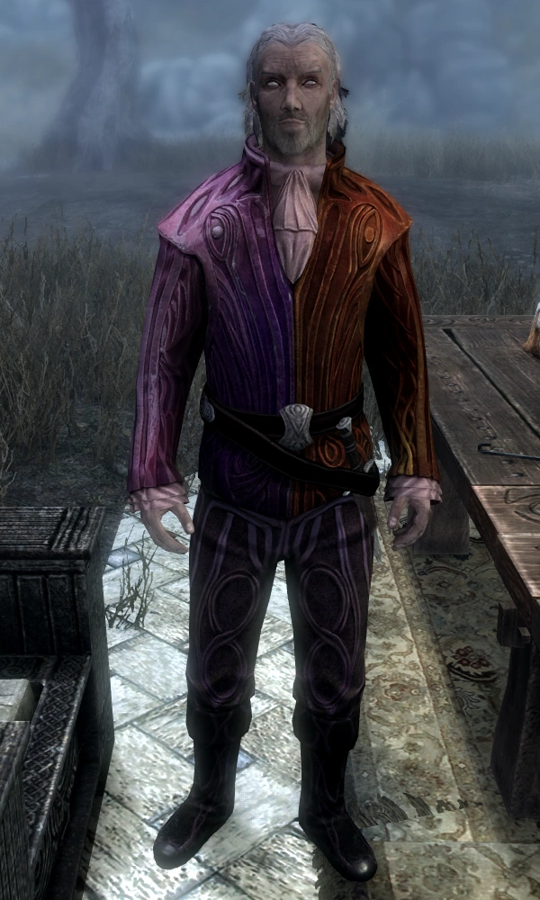

If you need to contact us, send a letter via courier or Daedric summoning to the Shivering Isles.
Our Owner

A Brief History
Sheogorath created this shop out of boredom during the Third Era. It was then set up with a few mortal managers and some Daedric guards to make sure the fun didnt end quickly. It was set up originally in the Shivering Isles, however it has moved several times since then, from Daggerfall to Morrowind to Oblivion to Hammerfell and so on, until coming to stay here in Skyrim, in Riften. When the shop first came to be, it only sold cheese. However, as mortals came and went, Sheogorath decided to amuse himself and get souvenirs to sell as well. So we have some things like the Fork of Horripilation(Forky), Palagius III's left boot(the right one sold about 134 years ago) and some other things. During the eruption of Red Mountain, the shop was briefly damaged due to falling ash and fire chunks, so Sheogorath decided to make a Volcano Exhibit in the shop to showcase where the mortal managers of the time were when they were caught in the rubble and burned to death. During the Oblivion Crisis, Sheogorath was a bit busy enjoying the madness and wreaking some choice havoc, but he got a few souvenirs for the shop, like the cowl of the Grey Fox and the sword Frostwyrm. The shop has many different items gifted from across the ages, and we hope you enjoy learning about them with the enchanted buttons added near their pedestals. Enjoy!